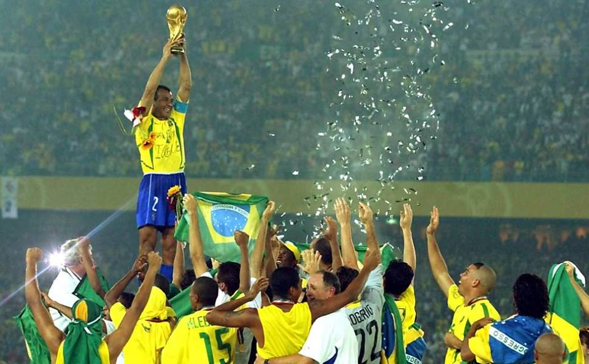
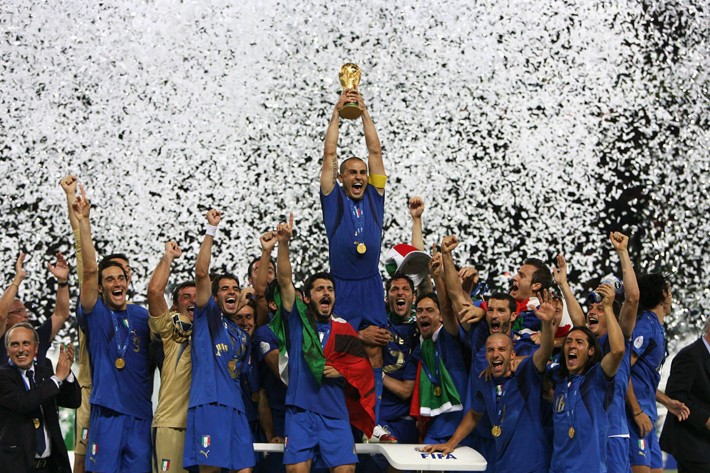
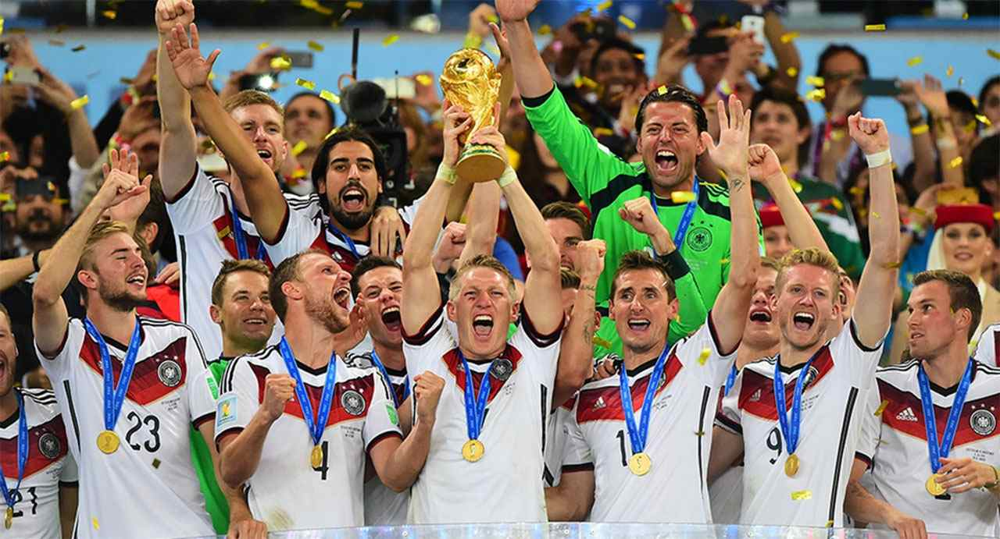

A Seleção Brasileira é considerada a top 1 do mundo por sua história, títulos e grandes momentos no futebol. É a maior campeã da Copa do Mundo FIFA, com cinco títulos (1958, 1962, 1970, 1994 e 2002). Foi com Pelé que o Brasil conquistou sua primeira Copa, em 1958, iniciando uma era de domínio. Em 1970, a seleção encantou o mundo com um futebol considerado até hoje um dos melhores da história. Em 2002, liderada por Ronaldo Nazário, o Brasil conquistou o penta. Além das Copas, o Brasil também soma vários títulos da Copa América e da Copa das Confederações FIFA, reforçando sua força no cenário internacional. A seleção revelou craques que marcaram gerações, como Ronaldinho Gaúcho e Neymar, mantendo viva a tradição do chamado “futebol-arte”, conhecido pela habilidade, criatividade e alegria em campo. Com tradição, títulos e ídolos históricos, a Seleção Brasileira construiu uma das histórias mais vitoriosas e respeitadas do futebol mundial. 🇧🇷⚽

A Seleção Italiana é considerada por muitos a número 2 do mundo por sua tradição, títulos e forte identidade tática. A Itália é tetracampeã da Copa do Mundo FIFA, conquistando os títulos em 1934, 1938, 1982 e 2006. Em 1982, liderada por Paolo Rossi, a equipe surpreendeu o mundo com uma campanha histórica. Já em 2006, com destaque para Fabio Cannavaro, a Itália venceu a final nos pênaltis e levantou sua quarta taça mundial. Além das Copas, a Itália também brilhou na UEFA Euro, conquistando títulos continentais e mostrando sua força no futebol europeu. A seleção é conhecida pelo seu estilo defensivo sólido, marcado pelo tradicional “catenaccio”, além de revelar grandes jogadores ao longo da história, como Roberto Baggio e Alessandro Del Piero. Com quatro Copas do Mundo, tradição tática e grandes ídolos, a Itália construiu uma das histórias mais respeitadas do futebol mundial, sendo frequentemente apontada como a segunda maior seleção da história. 🇮🇹⚽

A Seleção Alemã é considerada por muitos a número 3 do mundo por sua força, regularidade e mentalidade vencedora. A Alemanha é tetracampeã da Copa do Mundo FIFA, com títulos em 1954, 1974, 1990 (como Alemanha Ocidental) e 2014. Em 1954, ficou marcada pelo “Milagre de Berna”. Em 1974, contou com a liderança de Franz Beckenbauer. Em 1990, teve como destaque Lothar Matthäus. Já em 2014, no Brasil, conquistou o tetra com uma campanha histórica, incluindo a vitória por 7 a 1 na semifinal. Além das Copas, a Alemanha também é uma das maiores vencedoras da UEFA Euro, mostrando sua força no cenário europeu. A seleção alemã é conhecida por sua disciplina tática, organização, preparo físico e mentalidade forte em decisões. Revelou grandes nomes como Gerd Müller e Miroslav Klose, este último o maior artilheiro da história das Copas do Mundo. Com tradição, títulos e consistência ao longo das décadas, a Alemanha construiu uma das trajetórias mais sólidas e respeitadas do futebol mundial. 🇩🇪⚽
